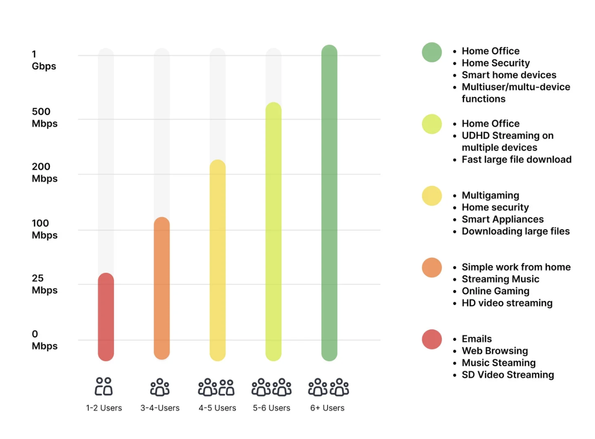
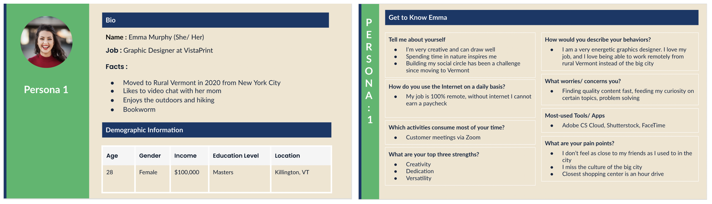
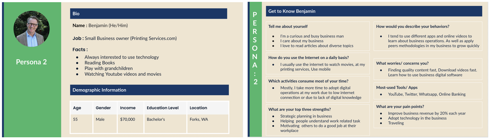
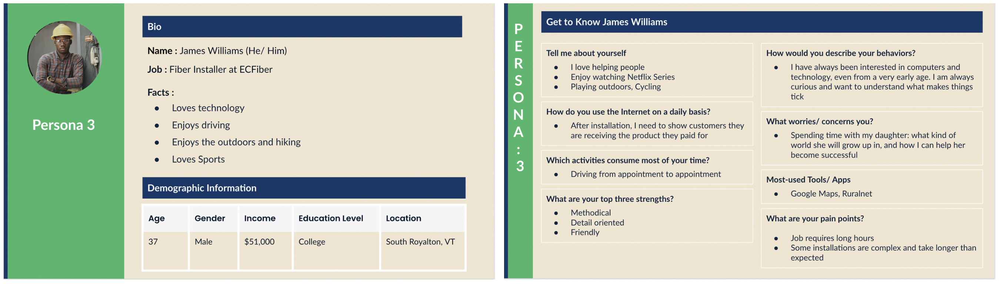
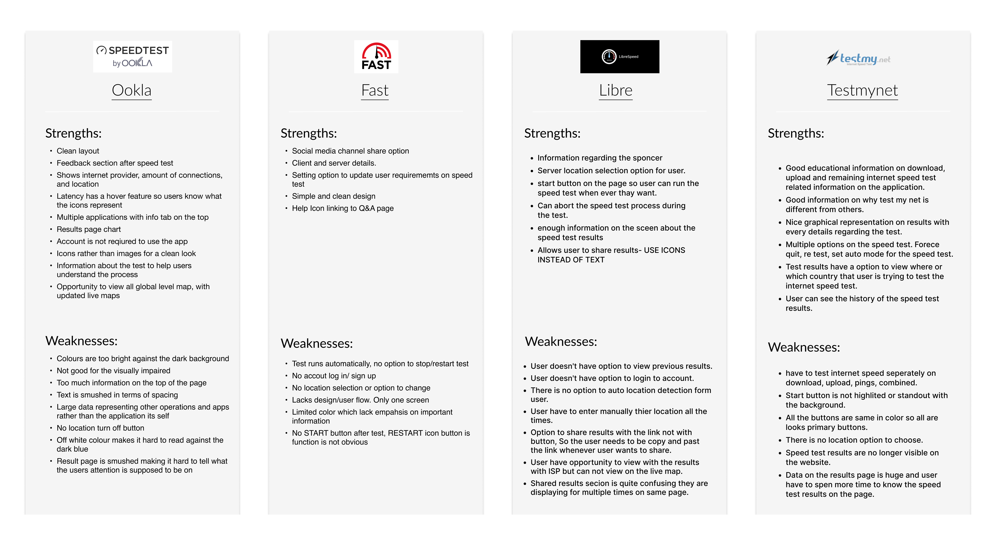
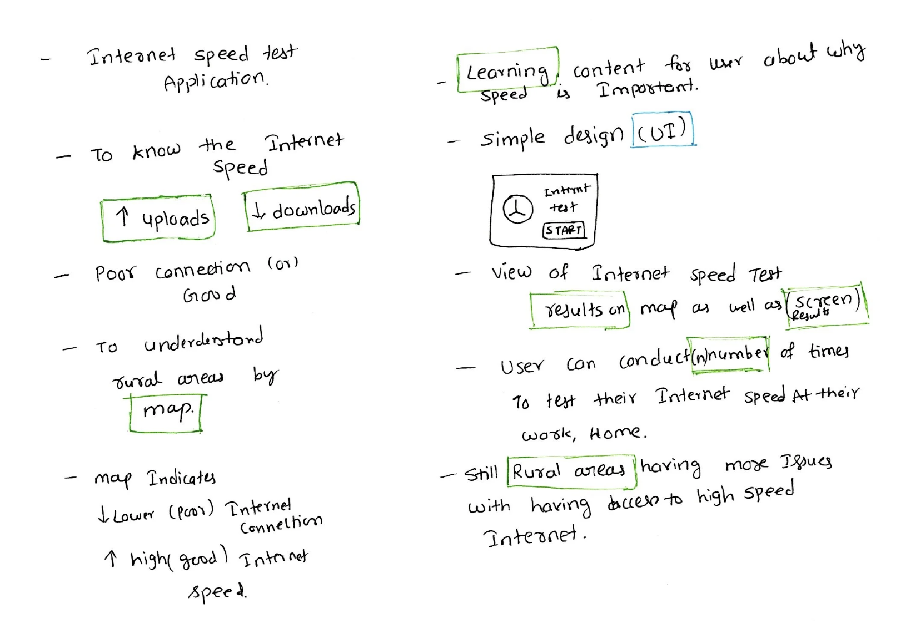
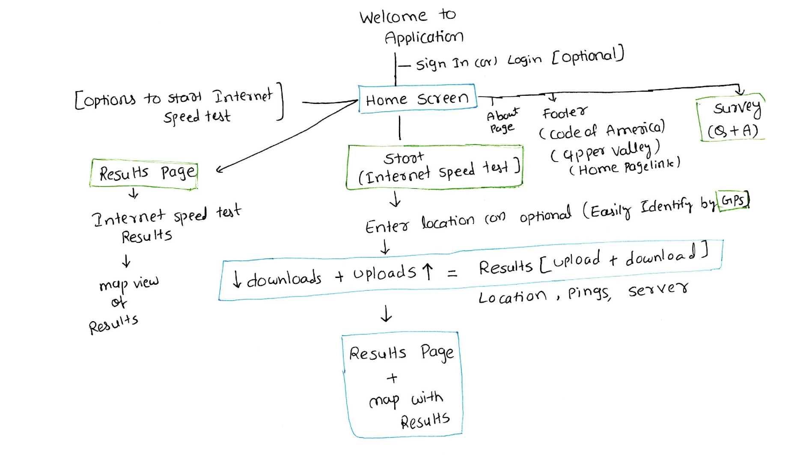
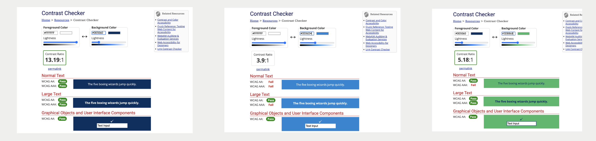

Rural net - Internet speed testing web application.
Designing end to end solution: Web application for Internet speed test.
Project Overview
What is Rural Net: Code for UV (Code for upper valley net, code for america) started as a small tech meetup and later became a volunteer group that worked on projects to help the community. One important project, Rural Net, created an internet speed test platform to find areas with slow or poor internet. The collected data helped communities ask for better broadband services and funding support.
Project timeline:Feb 2022 - July 2022
Methods : Created user personas, UI mockups, and prototypes to test the demo application. Designed complete graphics for the application, including icons, speedometer visuals, themes, color palettes, and logo design. Also established accessibility guidelines, conducted accessibility testing, and developed the design system for the application.
Tools : Figma, Google suite, notion
Project Related resources: Space on Main post, Article, Official websiteMy Role and responsibilities :
As a UX Designer, I was responsible for creating user personas from the user research surveys, conducting competitor analysis to identify unique features for the Rural Net application, and building the design system from scratch to ensure consistency and accessibility. I also designed custom graphics and crafted visually compelling user interfaces for the application.
Challenges
Reliable high-speed internet has become essential for daily life, but many rural communities still struggle with poor connectivity and limited options for improvement. Large internet service providers (ISPs) often advertise average or ideal internet speeds that do not reflect the actual experience of users. Because communities lack reliable real-world data, it becomes difficult to advocate for better internet infrastructure, leaving legislators dependent on inaccurate information provided by ISPs.
Solution:
Rural Net is a simple web application that helps people test and record internet speeds over time. By combining speed and location data, it provides a clearer picture of real-world internet availability.
The goal was also to share this data with public service organizations and local governments to support future efforts for improving internet infrastructure and policy decisions.
Understand the project context area and persona generation:
When I joined Code for America’s initiative, Rural Net, the team had already completed user research and analysis with around 120 participants from rural areas in Vermont. The research highlighted key challenges people faced in accessing reliable internet and their strong need for stable high-speed connectivity. (Here is the survey form: https://tinyurl.com/ynrzmdjf )
High-speed internet is essential for activities like downloading and uploading data, streaming videos without latency, and understanding daily data usage patterns. We also analyzed how different user groups use the internet across various categories. Using Vermont as a reference region, the survey insights and data visualization helped us better understand daily internet usage behaviors and the critical importance of reliable internet access in rural communities.
After analyzing the user research results and raw responses, we identified the need for three main persona groups because different age groups have distinct internet needs and usage patterns. To better address these challenges and understand user requirements across segments, we developed personas for each group.

The first group is students, who rely on the internet for educational videos, online learning, and completing school assignments. The second group is small business owners, who depend on the internet for activities such as social media management, online payments, and other day-to-day business operations.

The third persona is a technician who is responsible for supporting customers with their internet service. They help answer customer questions, check internet speed after installation, and monitor connection performance. When service issues or outages occur, the technician quickly identifies the problem, notifies the team or customers, and works to resolve and improve the connection.

These personas helped us build the application by providing a clear starting point for defining the next steps for the Rural Net application, ensuring it is simple and easy to use. They also guided us in conducting competitor analysis by evaluating existing applications already available in the market. This helped us identify opportunities to design a better application with more relevant and unique features.

Competitor analysis:
We started the competitor analysis by reviewing four web applications that are already being used by customers. Such as Ookla: https://www.speedtest.net/,.Fast: https://fast.com, RuralNet: https://ruralnet.codeforuv.org, libre: https://librespeed.org/, testmynet: https://testmy.net/ We created a Google Sheet to map each application’s strengths and weaknesses in order to identify opportunities for building a more unique and effective application. Below is the list of applications along with their strengths and weaknesses.
Key insights from the competitor analysis:
The web applications currently in use have several limitations. In some cases, the application restarts automatically and, although it has a clean design, it does not give users control to start, stop, or manage the process. In another application, the use of dark mode makes accessibility difficult for some users, and the icon clarity and color contrast are limited, impacting overall usability.
We also observed that certain applications emphasize less relevant features instead of prioritizing key actions such as download and upload controls. Additionally, some platforms provide an overwhelming number of internet-related options, which can confuse users. In other cases, users are exposed to excessive advertisements, which distracts from the core purpose of performing a speed test. Furthermore, map-based visualizations of internet speed often cover a very wide geographic range, making it difficult for users to interpret location-specific insights.

Based on these findings, we identified the need to build the Rural Net application with a simple and intuitive dashboard that supports different user groups, including students, small business owners, and technicians, to easily understand internet performance and identify potential issues. Users should have full control to start and stop speed tests at any time, with clear and easy-to-understand results displayed after each test.
We also propose adding a post-test survey to collect user feedback and additional data, which can help improve internet services and contribute to public insights. In addition, users should be able to view internet speed data based on their location through a clear and focused map view.
These insights from the competitor analysis, combined with our personas, guided us in defining the ideation and feature direction for the Rural Net application.
Ideation and Information Architecture of the Application:
Once we had a clear direction from the competitor analysis key insights and personas, we began evaluating different options and ideating the features and information needed for the application. This included deciding what to include in the dashboard, identifying the most important buttons, and defining the overall user flow.
To test internet speed, we identified the need for two main actions: upload and download speed tests. We also planned to include a survey at the end of the results, with prepared questions linked to the completion flow. Additionally, we defined what information should be displayed under each feature to ensure clarity and usability.
During ideation, we used pen and paper to quickly sketch and explore ideas. We also considered how to represent internet speed across rural areas using a map, whether to use a dark or light theme, and what color system would be most suitable. Since we did not have a logo, we discussed whether one needed to be created. We also explored how many users could take the test and how results would be stored.

Based on these discussions, we moved to information architecture (sitemap) to define the navigation structure of the application. A key requirement was to keep the application simple, clean, and minimalistic, with straightforward screens and user flows.
We defined a basic structure starting with a home page that includes key actions such as download, upload, and start speed test. From there, the flow continues into the speed test process, where download speed is measured first, followed by upload speed. After completion, users are directed to a results page and then a survey flow. We also included a map-based view to visualize internet speed data.

These flows represent the first iteration of our information architecture and establish the foundation for the application navigation.
Design System and UI Components Establishment:
Once we had the basic information architecture and application skeleton ready, the next step was to establish the design system and UI components to create visually appealing and consistent screens for the web application.
Since the application was relatively small and consisted of only a few core screens, we decided not to spend much time on low-fidelity mockups. Instead, we moved directly into high-fidelity designs, as most of the application experience was centered around the user flow and interactions.
We focused heavily on building a strong design system to maintain consistency across the application. This included defining colors, typography, buttons, icons, spacing, and reusable UI components, which helped us create a clean and cohesive user experience throughout the web application.
Since this was a volunteer project, we did not have a specialized graphic designer working on the project. As a result, the UX designers were responsible for handling all graphic-related UI mockup design work. As I had previously worked on freelance projects designing high-fidelity mockups with the necessary graphics, those skills greatly helped me while working on this project. I took ownership of establishing a well-structured and visually consistent design system for the application.
UI elements:
To build the design system, we started by selecting a simple and clean color palette with a minimalist approach. Since the application was designed in a light theme, we chose a white background as the base. Navy blue became the primary application color, while blue and green were used to highlight the download and upload actions in the internet speed test feature. Additional supporting colors were also selected to create visual hierarchy and highlight important elements across the application.
After finalizing the color palette, the next step was typography selection. We chose Lato and PT Sans as the primary font families for the application. Lato was selected as the main typography because of its clean, modern, and highly readable appearance, while PT Sans was mainly used for displaying numerical data and technical information.
The next major design element was the speedometer, which became the core visual component of the application. It represented the ongoing internet speed test and visually differentiated download and upload testing through color coding. Blue represented download speed tests, while green represented upload speed tests. We also designed motion-inspired graphics to create the feeling of speed and active testing, making the experience more interactive and engaging.
Finally, we focused on buttons, icons, and UI hierarchy within the design system. We carefully selected button sizes, spacing, and visual hierarchy to improve usability and accessibility. Larger primary buttons were used to clearly guide users toward the main action, such as starting the internet speed test. We also created highlighted and non-highlighted icons and buttons to help users easily understand active states, interactions, and application feedback.
Accessibility :

While working on the design system, accessibility was one of our major requirements to ensure the application would be usable for everyone. We conducted accessibility testing on the color palette, typography sizes, readability, and overall usability of the interface. This helped us validate color contrast, ensure accessible content, and create an application that is more inclusive, readable, and easy to use for all users.
Key Learnings & Insights
Working on Rural Net helped me understand how UX design can contribute to solving real-world community problems beyond traditional business applications. One of the biggest learnings from this project was the importance of simplifying complex technical information into an easy-to-understand experience for users with different levels of digital literacy.
I also learned how strong user research and competitor analysis directly influence product direction, feature prioritization, and information architecture decisions. Building the design system from scratch strengthened my understanding of visual consistency, accessibility, UI hierarchy, and scalable component design.
Since this was a volunteer-driven initiative with limited resources, I gained valuable experience in taking ownership, collaborating across teams, balancing multiple responsibilities, and adapting quickly throughout the design process. Most importantly, the project reinforced the value of designing technology that creates meaningful social impact for underserved communities. Although the platform is no longer publicly available, the case study highlights my end-to-end UX process, systems thinking, and collaboration experience developed throughout the project
Outcomes
We used the Figma tool to create high-fidelity mockups for the application. The design went through several iterations, during which we tested clickable prototypes to evaluate the user flow and overall usability. After multiple refinements, we finalized the demo version of the application. Here is the demo application (clickable prototype) that you can explore and try.
Next steps: If the Rural Net application had continued development, the next steps would have included conducting usability testing with real users from rural communities to validate the application experience and identify improvements. The team also planned to integrate real-time internet speed data collection with location-based mapping for better visualization of connectivity issues across regions. Additional improvements would include refining the survey experience, enhancing accessibility standards, optimizing the mobile experience, and collaborating with public organizations to share internet data for infrastructure planning and policy support. Future iterations would also focus on expanding analytics dashboards and providing more personalized insights for different user groups such as students, small business owners, and technicians.